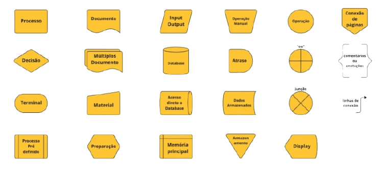
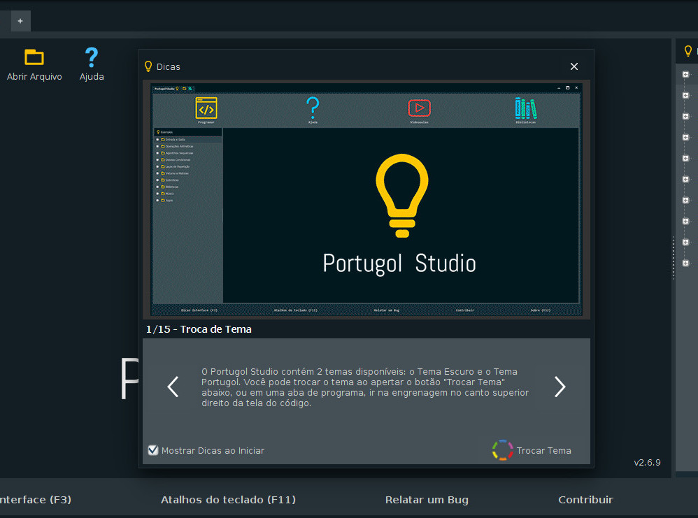

Fluxogramas são ferramentas gráficas usadas para representar visualmente etapas de um processo, mostrando de forma clara a sequência de atividades, decisões, entradas e saídas. Eles são muito usados em:
Simbologia básica dos fluxogramas

Um algoritmo é um conjunto de instruções que diz o que fazer, como fazer e em que ordem fazer. Ele pode ser escrito em linguagem natural, fluxograma, pseudocódigo ou em uma linguagem de programação.
Exemplo simples de algoritmo (em linguagem natural):
Os algoritmos estão presentes em quase tudo que usamos. Eles fazem computadores e celulares funcionarem, organizam dados, realizam buscas e controlam aplicativos. Também são usados em inteligência artificial, como nos sistemas de recomendação e no reconhecimento facial. No comércio e nos bancos, ajudam a calcular valores, processar pagamentos e detectar fraudes. No trânsito, traçam rotas em aplicativos de mapas. Até no dia a dia utilizamos algoritmos sem perceber, como ao seguir uma receita ou resolver um cálculo.
Portugol é uma linguagem de pseudocódigo baseada na língua portuguesa, usada para ensinar lógica de programação. Ele não é uma linguagem real usada por computadores, mas sim uma forma simplificada de escrever algoritmos de maneira parecida com o português, facilitando o entendimento antes de aprender linguagens mais complexas como Java, Python ou C.
O que é o Portugol Studio?
O Portugol Studio é um programa (ambiente de desenvolvimento) criado para permitir que os alunos escrevam, executem e testem algoritmos feitos em Portugol. Ele funciona como uma “ferramenta escolar” que ajuda a visualizar o código, ver erros, executar passo a passo e aprender lógica de programação de forma mais prática.

Variáveis são espaços na memória usados para guardar valores que podem mudar durante a execução de um programa. Elas funcionam como “caixinhas” onde você coloca um valor agora, mas pode trocar depois.
E Constantes também são espaços na memória, mas servem para guardar valores que NÃO podem mudar depois que são definidos. É como uma caixinha lacrada: você coloca um valor e ele permanece sempre o mesmo.